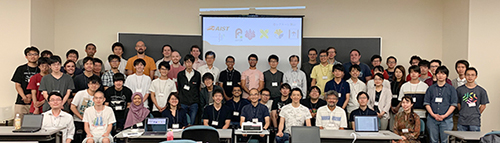

| 2025.11.08 |
石井 央さん(D2)らの共著論文がAAAI2026に採択されました
石井 央さん(D2)とNTTの共同研究者らの共著論文「FedPM: Federated Learning Using Preconditioned Mixing of Local Parameters」がThe 40th Annual AAAI Conference on Artificial Intelligence (AAAI)に採択されました。 |
| 2025.09.29 |
石川さん(D1)の研究提案がACT-Xに採択されました
石川さん(D1)の研究提案が2025年度 戦略的創造研究推進事業（ACT-X）へ採択されました。 |
| 2025.09.22 |
Cong Baiさん(D2)の論文がNeruIPS2025に採択されました
Cong Baiさん(D2)とRIKEN AIPの共同研究「Variational Learning Finds Flatter Solutions at the Edge of Stability」が Annual Conference on Neural Information Processing Systems (NeurIPS)に採択されました。
|
| 2025.09.22 |
田島さん(M1)の論文がNeruIPS2025に採択されました
田島さん(M1)とDenso ITラボ、情報理工学院の井上先生の共同研究「Masked Gated Linear Unit」が Annual Conference on Neural Information Processing Systems (NeurIPS)に採択されました。
|
| 2025.01.23 |
Sunさん(D1)の論文が2本ICLR2025に採択されました
Qi Sunさん(D1)とSakana AIの共同研究「Transformer^2 Self-adaptive LLMs」と「An Evolved Universal Transformer Memory」が International Conference on Learning Representations (ICLR)に採択されました。 |
| 2025.01.23 |
石川 智貴さん(M2)の論文が2本ICLR2025に採択されました
石川 智貴さん(M2)と産総研の共同研究「Local Loss Optimization in the Infinite Width: Stable Parameterization of Predictive Coding Networks and Target Propagation」とOISTとの共同研究「PhiNets: Brain-inspired Non-contrastive Learning Based on Temporal Prediction Hypothesis」がInternational Conference on Learning Representations (ICLR)に採択されました。 |
| 2025.01.23 |
中村 泰士さん(M1)の論文が2本ICLR2025に採択されました
中村 泰士さん(M1)とNIIとSakana AIの共同研究「Drop Upcycling: Training Sparse Mixture of Experts with Partial Re-initialization」とSakana AIとの共同研究「Agent Skill Acquisition for Large Language Models via CycleQD」がInternational Conference on Learning Representations (ICLR)に採択されました。
|
| 2023.12.19 |
東工大 (岡崎研と横田研) と 産総研から オープンなLLMの中で日本語で最高性能の大規模言語モデル Swallow を公開しました。
東京工業大学情報理工学院の岡崎研究室と横田研究室、産業技術総合研究所の研究チームでLlama 2 7B, 13B, 70Bの日本語能力を引き上げました。13Bと70BのオープンなLLMの中で日本語の最高性能を達成しました。
https://www.titech.ac.jp/news/2023/068089 |
| 2023.08.11 |
横田教授が「ガイアの夜明け」に出演しました。
横田教授が8月11日放送の「ガイアの夜明け（AIは天使か悪魔か）」で、
スーパーコンピュータ「富岳」で生成AIの基盤となる技術を開発するプロジェクトを紹介しました。
https://www.tv-tokyo.co.jp/gaia/ |
| 2023.04.25 |
Stability AI JapanのDavid Ha, Jerry Chi, Kamil Rockiによる特別セミナーを開催します。
Zoomによるオンライン配信も実施いたします。
| 日時： |
４月２５日（火）11:00-12:00 |
| 場所： |
東京工業大学 学術国際情報センター 情報棟 2F 会議室 |
| Zoom： |
終了したイベントのリンクは削除しました。
参加登録不要、どなたでも聴講可、講演は英語で行われます。 |
| 講演者： |
David Ha, Jerry Chi, Kamil Rocki |
| 題目： |
Collective Intelligence of Generative AI |
| 要旨： |
Generative machine learning models, such as generative adversarial networks for images, and language models for text have been around for many years. While impressive, their use cases had been largely confined to research or technical communities. However, from 2022-2023, we are witnessing an explosion of interest in text-to-image models, which are generative ML models that combine both text and image modalities. The ability to generate images simply from text input created interest far beyond the technical community, resulting in an explosion of casual creativity. What is it about the multi-modality of the models that make them so interesting to people and how will this technology fundamentally change our relationship with technology, and with each other? In this talk, we first give an overview of the state text-to-image technology, and explore deep questions concerning what makes this technology so compelling to large groups of users and continually drives iterative exploration. We explain why text-to-image models are a fundamental technology that enables our desire as social animals to share novel cultural artifacts and innovative uses of the technology itself with others, and, like previous culture-changing technology such as photography and mobile phones, will drive large shifts in our collective behavior that will fundamentally alter human culture. |
| 講演者紹介： |
 - David Ha is the Head of Strategy at Stability AI. He previously worked as a Research Scientist at Google, working in the Brain research team. His research interests include complex systems, self-organization, and creative applications of machine learning. Prior to joining Google, He worked at Goldman Sachs as a Managing Director, where he co-ran the fixed-income trading business in Japan. He obtained his undergraduate and masters degrees from the University of Toronto, and his PhD from the University of Tokyo. - David Ha is the Head of Strategy at Stability AI. He previously worked as a Research Scientist at Google, working in the Brain research team. His research interests include complex systems, self-organization, and creative applications of machine learning. Prior to joining Google, He worked at Goldman Sachs as a Managing Director, where he co-ran the fixed-income trading business in Japan. He obtained his undergraduate and masters degrees from the University of Toronto, and his PhD from the University of Tokyo.
 - Jerryは、日中韓英流暢な台湾系アメリカ人で、今はStability AIの日本支社の立ち上げを頑張っています。2006年にスタンフォード大学工学部を、2012年にペンシルバニア大学ウォートン校を卒業しました。これまでに彼は、Google、Supercell、スマートニュース、Indeedでアナリティクスや機械学習関連の役職を経験してきました。また、起業家としての経験を活かし、様々なスタートアップのアドバイザーを勤めてきました。Jerryのパッションは生成AI及び機械学習のクリエイティブ分野への応用です。 - Jerryは、日中韓英流暢な台湾系アメリカ人で、今はStability AIの日本支社の立ち上げを頑張っています。2006年にスタンフォード大学工学部を、2012年にペンシルバニア大学ウォートン校を卒業しました。これまでに彼は、Google、Supercell、スマートニュース、Indeedでアナリティクスや機械学習関連の役職を経験してきました。また、起業家としての経験を活かし、様々なスタートアップのアドバイザーを勤めてきました。Jerryのパッションは生成AI及び機械学習のクリエイティブ分野への応用です。
 - Kamil Rocki graduated from the University of Tokyo with a PhD degree in Computer Science in 2011. Currently, he is a Senior Machine Learning Research Engineer at Stability AI, where he pushes the GPUs to their limits. Prior to that the led the dense linear solver team at NVIDIA. Before that he worked at Neuralink, Cerebras Systems and IBM Research. During that time he worked he decoded brain signals using a AI on an 64-MHz ARM chip in real-time, wrote implemented a neural network as well as faster-than-realtime Fluid Dynamics simulation on a 400.000-core wafer in assembly as well as prototyped a distributed Reinforcement Learning on an 1000-node FPGA cluster. - Kamil Rocki graduated from the University of Tokyo with a PhD degree in Computer Science in 2011. Currently, he is a Senior Machine Learning Research Engineer at Stability AI, where he pushes the GPUs to their limits. Prior to that the led the dense linear solver team at NVIDIA. Before that he worked at Neuralink, Cerebras Systems and IBM Research. During that time he worked he decoded brain signals using a AI on an 64-MHz ARM chip in real-time, wrote implemented a neural network as well as faster-than-realtime Fluid Dynamics simulation on a 400.000-core wafer in assembly as well as prototyped a distributed Reinforcement Learning on an 1000-node FPGA cluster. |
|
| 2023.03.04 |
石川智貴さん(B4)が情報処理学会 第85回全国大会 にて学生奨励賞を受賞
石川智貴さん(B4)が情報処理学会 第85回全国大会にて「深層学習における勾配の前処理法に関する検討」に関する発表を行い、学生奨励賞を受賞しました。 |
| 2023.03.02 |
大友広幸さん(D3)の研究がHPC Asia 2023でBest Paper賞を受賞しました
大友広幸さん(D3)の研究「Reducing shared memory footprint to leverage high throughput on Tensor Cores and its flexible API extension library」がHPC Asia 2023でBest Paper賞を受賞しました。 |
| 2023.02.28 |
高島空良さん(M2)と産総研の共同研究がCVPR2023に採択されました
高島空良さん(M2)と産総研の共同研究「Visual Atoms: Pre-training Vision Transformers with Sinusoidal Waves」が画像認識分野のトップカンファレンスIEEE/CVF Conference on Computer Vision and Pattern Recognitionに採択されました (採択率25.78%)。 |
| 2023.02.01 |
大沢和樹さん(卒業生)がDeepMindに就職しました
大沢和樹さん(卒業生)がDeepMindのOptimization and Bayesian Deep Learning Teamに就職しました。 |
| 2022.12.18 |
Aoyu Liさん(卒業生)の研究がACM Multimedia Asia 2022でBest paper賞を受賞しました
Aoyu Liさん(卒業生)の研究”Informative Sample-aware Proxy for Deep Metric Learning”がACM Multimedia Asia 2022でBest paper賞を受賞しました |
| 2022.07.28 |
大友広幸さん(D3)の研究が2022年度山下記念研究賞を受賞しました
大友広幸さん(D3)の研究”TensorCoreを用いた精度補正単精度行列積”が情報処理学会の2022年度山下記念研究賞を受賞しました
https://www.ipsj.or.jp/award/yamashita2022.html |
| 2022.06.13 |
Qianxiang Maさん(D2)とSameer Deshmukhさん(D3)の研究がSC22に採択されました
Qianxiang Maさん(D2)とSameer Deshmukhさん(D3)の研究”Scalable Linear Time Dense Direct Solver for 3-D Problems Without Trailing Sub-Matrix Dependencies”がThe International Conference for High Performance Computing, Networking, Storage, and Analysis (SC22)に採択されました |
| 2022.05.29 |
Muhammad Ridwan Apriansyahさん(D2)の研究がACM TOMSに採択されました
Muhammad Ridwan Apriansyahさん(D2)の研究”Parallel QR Factorization of Block Low-Rank Matrices”がACM Transactions on Mathematical Softwareに採択されました |
| 2022.03.04 |
中村秋海君(B4)が情報処理学会 第84回全国大会 にて学生奨励賞を受賞
中村秋海君(B4)が情報処理学会 第84回全国大会にて「Vision Transformerにおけるバッチサイズの汎化性能への影響」に関する発表を行い、学生奨励賞を受賞しました。 |
| 2022.03.03 |
Edgar Martinez Noriegaさん(ポスドク)、高島空良君(M1)、張新宇君(M1)と産総研の共同研究がCVPR2022に採択されました
Edgar Martinez Noriegaさん(ポスドク)、高島空良君(M1)、張新宇君(M1)と産総研の共同研究”Replacing Labeled Real-image Datasets with Auto-generated Contours”が画像認識分野のトップカンファレンスIEEE/CVF Conference on Computer Vision and Pattern Recognition (CVPR2022)に採択されました(採択率25.33%) |
| 2022.02.28 |
大友広幸さん(D2)の研究がIJHPCAに採択されました
大友広幸さん(D2)の研究”Recovering Single Precision Accuracy from Tensor Cores While Surpassing the FP32 Theoretical Peak Performance”がThe International Journal of High Performance Computing Applicationに採択されました |
| 2022.02.01 |
星野華さん(M2)の研究がICRA2022に採択されました
星野華さん(M2)の研究”OPIRL: Sample Efficient Off-Policy Inverse Reinforcement Learning via Distribution Matching”がロボティクス分野のトップカンファレンスIEEE International Conference on Robotics and Automation (ICRA2022)に採択されました(採択率43%) |
| 2020.11.06 |
横田研に新しいポスドクEdgar Josafat Martinez Noriegaさんが加わりました
NEDOの研究課題「人と共に進化する次世代人工知能を実現するための、パイパフォーマンスコンピューティング技術、およびプラットフォームの研究開発」の研究員としてEdgar Josafat Martinez Noriegaさんが横田研に加わりました |
| 2020.09.25 |
大沢和樹君（D3）の研究が NeurIPS 2020 (oral) に採択されました
大沢和樹君（D3）の研究 "Understanding Approximate Fisher Information for Fast Convergence of Natural Gradient Descent in Wide Neural Networks"が機械学習分野のトップカンファレンス Thirty-forth Conference on Neural Information Processing Systems (NeurIPS 2020) の oral presentation に採択されました。（採択率
1.1%）
|
| 2020.08.25 |
上野裕一郎君（M2）と大沢和樹君（D3）の研究を KDD 2020 で発表しました
上野裕一郎君（M2）と大沢和樹君（D3）の研究 "Rich Information is Affordable: A Systematic Performance Analysis of Second-order Optimization Using K-FAC" を KDD 2020 で発表しました |
| 2020.08.05 |
横田研のHPCI研究課題が優秀成果賞に選ばれました
横田研のHPCI研究課題「超大規模並列深層学習のための革新的最適化手法の開発」が第7回成果報告会におけるHPCI利用研究課題優秀成果賞に選定されました |
| 2020.07.03 |
渋谷樹弥君（M1）の産総研での研究がECCV2020に採択されました
渋谷樹弥君（M1）の産総研での研究 "Privacy Preserving Visual SLAM" がECCV2020(採択率 27%)に採択されました |
| 2020.06.22 |
大友広幸君（D1）とSameer君（D1）がISC2020 Research Posters の発表をオンラインで行いました |
| 2020.06.20 |
大沢和樹君（D3）と上野裕一郎君（M2）の研究が IEEE Transactions on Pattern Analysis and Machine Intelligence (TPAMI) に採択されました。
大沢和樹君（D3）と上野裕一郎君（M2）の研究 "Scalable and Practical Natural Gradient for Large-Scale Deep Learning" が AI/機械学習分野の最難関国際ジャーナル IEEE Transactions on Pattern Analysis and Machine Intelligence (TPAMI) に採択されました。 |
| 2020.05.16 |
上野裕一郎君（M2）と大沢和樹君（D3）の研究が KDD 2020 に採択されました
上野裕一郎君（M2）と大沢和樹君（D3）の研究 "Rich Information is Affordable: A Systematic Performance Analysis of Second-order Optimization Using K-FAC" が 26th ACM SIGKDD International Conference on Knowledge Discovery and Data Mining (KDD 2020, Virtual Event, USA) の Research Track に採択されました。（採択率 16.9% 216/1279） |
| 2020.04.23 |
大友広幸君（D1）とSameer君（D1）の研究がISC2020 Research Posters に採択されました |
| 2020.03.17 |
郭林昇君(M2)がKaggleで1位を取りました
郭林昇君(M2)がBengali.AI Handwritten Grapheme Classificationで1位を取りました．https://www.kaggle.com/c/bengaliai-cv19/leaderboard |
| 2020.01.22 |
大友広幸君（M2）が「HAKKO熱の実験コンテスト（熱コン）」に参加し、銀賞を受賞しました。
大友広幸君（M2）の実験「計算パーツの熱に関する実験」が「HAKKO熱の実験コンテスト（熱コン）」にて銀賞を受賞しました。 |
| 2020.01.16 |
Sameer Deshmukh君（D1）、Muhammad Ridwan Apriansyah君（M2）がHPC Asia 2020にてResearch Posterの発表を行いました。
Sameer Deshmukh君（D1）が "Distributed Memory Task-Based Block Low Rank Direct Solver"、Muhammad Ridwan Apriansyah君（M2）が "QR Decomposition of Block Low-Rank Matrices" のポスター発表を HPC Asia 2020 Poster Session にて行いました。
http://sighpc.ipsj.or.jp/HPCAsia2020/index.html
|
| 2019.11.22 |
長沼大樹君（D1）、がIBIS2019にてPosterの発表を行いました。
長沼大樹君（D1）が第22回情報論的学習理論ワークショップ (IBIS 2019) にて1件のポスター発表を行いました。
http://ibisml.org/ibis2019/posters/ |
| 2019.11.20 |
大友広幸君（M2）がSC19にてResdearch Poster, Best Poster候補として一件の研究発表を行いました。
大友広幸君（M2）がColorado Convention Centerにて行われたSC19にてBest Poster候補として研究 "TSQR on TensorCores" の発表を行いました． |
| 2019.11.19 |
大友広幸君（M2）、Qianxiang Ma君（M1）がSC19にてResearch Posterの発表を行いました。
大友広幸君（M2）が "TSQR on TensorCores"、Qianxiang Ma君（M1）が "Runtime System for GPU-based Hierarchical LU factorization" のポスター発表を SuperComputing (SC19) Research Posters にて行いました。
https://sc19.supercomputing.org/ |
| 2019.11.17 |
長沼大樹君（D1）、がACML2019にて Posterの発表を行いました。
長沼大樹君（D1）が "On Empirical Analysis of Layer-wised Learning Rate Schedule" のポスター発表を ACML 2019 Workshop on Statistics & Machine Learning Researchers にて行いました。 |
| 2019.11.16-18 |
郭林昇君がICPC 2019 Asia Yokohama Regional にunlimited greedyとして出場しました。
https://icpc.iisf.or.jp/2019-yokohama/regional-standings/ |
| 2019.9.7 |
大友広幸君（M2）、Qianxiang Ma君（M1）の研究がSC19 Research Posters に採択されました
大友広幸君（M2）の研究 "TSQR on TensorCores"（Best Poster候補）、Qianxiang Ma君（M1）の研究
"Runtime System for GPU-based Hierarchical LU factorization" が
SuperComputing (SC19, Denver, Colorado, U.S.A) Research Posters に採択されました。
https://sc19.supercomputing.org/ |
| 2019.9.3 |
日本応用数理学会 2019年度 年会にて横田研究室より一件の研究発表を行いました
大友広幸君(M2)が東京大学で行われた日本応用数理学会 2019年度 年会にて一件の発表を行いました。
https://annual2019.jsiam.org/
|
| 2019.9.3 |
大沢和樹君（D2）の研究が NeurIPS 2019 に採択されました
大沢和樹君（D2）の研究 "Practical Deep Learning with Bayesian Principles"
が機械学習分野のトップカンファレンス Thirty-third Conference on Neural Information Processing
Systems (NeurIPS 2019, Vancouver, CANADA) の main conference に採択されました。（採択率
21.1% 1428/6743）
https://neurips.cc/Conferences/2019/ |
| 2019.8.26-28 |
レクトーレ葉山にて人工知能CREST3課題合同ワークショップを開催しました。  |
| 2019.7.29 |
MIRU 2019 にて横田研より口頭発表を行いました
岩瀬駿君(M2)がMIRU2019にて口頭発表を行いました。
http://cvim.ipsj.or.jp/MIRU2019/ |
| 2019.7.26 |
第170回HPC研究会にて横田研より2件の発表を行いました
大友広幸君(M2)、Peter Spalthoff君(M2)が第170回HPC研究会にて2件の発表を行いました。
https://www.ipsj.or.jp/kenkyukai/event/hpc170.html |
| 2019.7.12 |
郭林昇君(M1)が所属するチームがICPC2019国内予選を突破しました
郭林昇君(M1)が所属するチームunlimited greedyがICPC2019の国内予選を突破し、12月のアジア予選への出場が決定しました。
https://icpcsec.firebaseapp.com/standings/
|
| 2019.5.29 |
長沼大樹君(D1)がxSig2019にてOutstanding Presentation Awardを受賞しました
長沼大樹君(D1)が慶應義塾大学で行われたxSig2019にて発表を行いOutstanding Presentation Awardを受賞しました。
http://xsig.hpcc.jp/2019/awards/ |
| 2019.5.28 |
xSig2019にて横田研より2件の発表を行いました
長沼大樹君(D1)が慶應義塾大学で行われたxSig2019にて二件の発表を行いました。
http://xsig.hpcc.jp/2019/ |
| 2019.5.14 |
長沼大樹君(D1)の研究が2nd High Performance Machine Learning Workshop Held in conjunction with CCGrid2019に採択されました
長沼大樹君(D1)がCyprusで行われた2nd High Performance Machine Learning Workshop Held in conjunction with CCGrid2019にて発表を行いました。
https://hpml2019.github.io/ |
| 2019.3.20 |
2019年電子情報通信学会総合大会にて長沼大樹君(M2)が優秀ポスター賞を受賞
長沼大樹君(M2)が2019年電子情報通信学会総合大会ポスターセッションにて1件の発表を行い、優秀ポスター賞を受賞しました。
https://www.ieice-taikai.jp/2019general/jpn/ |
| 2019.3.15 |
大友広幸君(M1)が 情報処理学会 第81回全国大会 にて学生奨励賞を受賞
大友広幸君(M1)が情報処理学会 第81回全国大会にて1件の発表を行い、学生奨励賞を受賞しました。
http://www.ipsj.or.jp/award/taikaigakusei.html |
| 2019.3.14 |
情報処理学会 第81回全国大会 にて横田研究室から四件の研究発表を行いました
大沢和樹君(D1)、長沼大樹君(M2)、大友広幸君(M1)、中田光君(B4)が福岡大学で行われた情報処理学会 第81回全国大会にて、四件の研究発表を行いました。
https://www.ipsj.or.jp/event/taikai/81/ |
| 2019.3.2 |
大沢和樹君（D1）と上野裕一郎君（B4）の研究が CVPR 2019 に採択されました
大沢和樹君（D1）と上野裕一郎君（B4）の研究 "Large-scale Distributed Second-order Optimization Using Kronecker-factored Approximate Curvature for Deep Convolutional Neural Networks" が IEEE Conference on Computer Vision and Pattern Recognition (CVPR 2019, Long Beach, CA) の main conference に採択されました。（採択率 25.2% 1300/5160） |
| 2019.2.16 |
上野裕一郎君（B4）の研究がCCGrid 2019 に採択されました
上野裕一郎君（B4）の研究 "Exhaustive Study of Hierarchical AllReduce Patterns for Large Messages Between GPUs" が IEEE/ACM International Symposium in Cluster, Cloud, and Grid Computing (CCGrid 2019) の main conference に採択されました。（採択率22.7% 47/207） |
| 2019.2.15 |
修士構想/中間発表
張晨舞君(M2)、Sameer Deshmukh君(M2)、岩瀬駿君(M1)、大友広幸君(M1)、桑村裕二君(M1)、Elket Ahmed君(M1)、Miglena Zheleva(M1)さん、Spalthoff Peter君(M1)が学部卒論発表を行いました。
発表タイトルは以下の通りです。
張晨舞、「Accelerating Fast Multipole Method with Precomputed Kernel Matrices」
Sameer Deshmukh「Distributed Memory Parallelization of Hierarchical Matrices」
岩瀬駿、「物体検出を用いた意味的変化の検出に関する研究」
大友広幸郎、「TensorCoreとbatch処理を用いたQR分解の高速GPU実装」
桑村裕二郎、「二次最適化の強化学習への適用」
Spalthoff Peter、「Hierarchical Low-Rank Factorizations operations on GPU-clusters」
Miglena Zheleva、「Improving Energy Conservation of FMM for Molecular Dynamics Simulation」
Elket Ahmed、「Kernel Independent Fast MutipoleMethod on GPUs」 |
| 2019.2.12 |
学部卒論発表
上野裕一郎君(B4)、郭林昇君(B4)、中田光君(B4)が学部卒論発表を行いました。
発表タイトルは以下の通りです。
上野裕一郎、「帯域幅最適なGPU間AllReduce通信の階層化」
郭林昇、「Siamese Networkによる筆者識別に関する研究」
中田光、「自然勾配法に基づくベイズ的深層学習に関する研究」 |
| 2019.2.4 |
修士論文発表
長沼大樹君(M2)が修士論文発表を行いました。
発表タイトルは以下の通りです。
長沼大樹、「大規模並列深層学習のための確率的最適化に基づいた目的関数の平滑化」 |